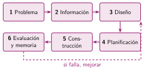
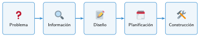
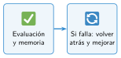

Las fases de un proyecto
🤔 Pienso5 min
Qué hago aquí: Piensa un momento y contesta con lo que ya sabes. No pasa nada si no lo sabes: es para empezar.
Numera del 1 al 5 los pasos para preparar una fiesta de clase.
- Comprar la comida.
- Decidir qué fiesta queremos.
- Celebrar la fiesta.
- Repartir quién trae qué.
- Pensar qué salió bien y qué no.
📖 Leo y aprendo15 min
Qué hago aquí: Lee despacio, mira los dibujos y los ejemplos, y quédate con la idea clave del final.
En el taller no construimos a ciegas. Primero pensamos, luego planificamos y al final construimos y probamos.



✏️ Hago25 min
Qué hago aquí: Haz las actividades en orden. Empieza siempre por las básicas.
Ordena las fases del 1 al 6: construcción problema diseño evaluación información planificación
Une cada tarea con su fase.
| Montar el robot • | • Diseño |
| Dibujar tres ideas • | • Evaluación |
| Probar si funciona • | • Construcción |
Vuelve a la fiesta de Pienso. ¿A qué fase corresponde cada paso?
Piensa en un problema del colegio que se pueda resolver con una máquina. Escribe el problema y dos cosas que debe cumplir la solución.
✏️ Puedes responder escribiendo, con un dibujo o un esquema, o contándolo en voz alta.
🚀 Amplío (si quieres saber más)
Qué hago aquí: ¿Has terminado? Lee la curiosidad o elige el reto. Es voluntario.
Busca un invento famoso. Escribe qué hicieron sus inventores en tres de las fases.
✅ Compruebo5 min
Qué hago aquí: Contesta sin mirar la ficha y marca cómo lo llevas.